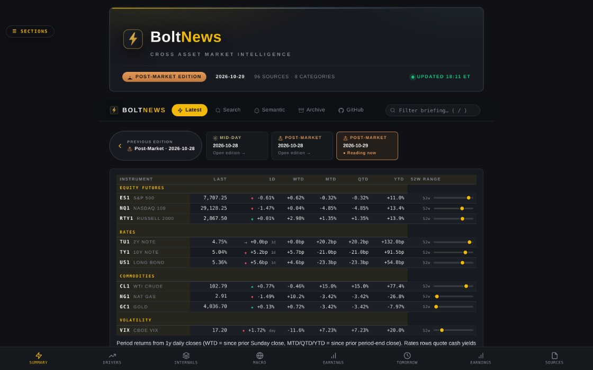

Live · news.bolt.ceoWalk in already knowing
BoltNews
TodayReads 90 sources overnight and writes three editions a day — what moved, why it moved, and what is set up — across stocks, rates, credit, FX, commodities and crypto.
PossiblePointed at your coverage, with your house view as the lens.